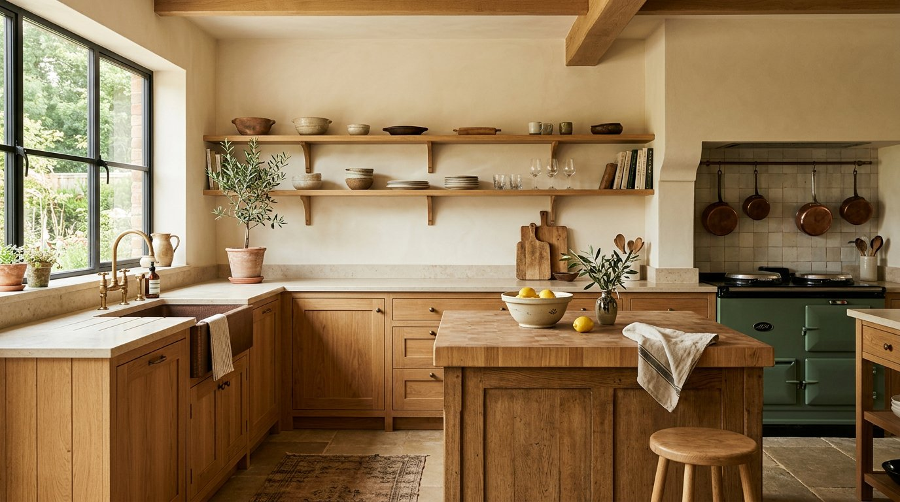

01 / Walls & finishes
Wallpaper smoothing kit
How do you choose a wallpaper smoothing tool?
Read the guide →THE PRACTICAL HOME EDIT
Make the most of the space you already have. Start with practical picks for smoother walls and a kitchen that works better.
Explore the edit →
THE FIRST EDIT
01 / Walls & finishes
How do you choose a wallpaper smoothing tool?
Read the guide →02 / Kitchen organization
Adhesive or screw mount: what fits your kitchen?
Read the guide →03 / Kitchen organization
Will a cookware rack fit your cabinet?
Read the guide →SEASONAL NOTE
Start with the cabinet you open most often. Measure it before you shop for a rack or move a holder off the counter.
Explore kitchen organization →